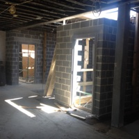
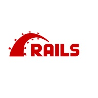

About
"We started out with nothing, then got a little more" - Lin-Manuel Miranda as Alexander Hamilton
-
2000-2004
Our Humble Beginnings
Starting with a tiny staff, some seed money from a wealthy and mysterious benefactor, and the best intentions, Transitionpoint was born during the startup explosion of 2000. Based in beautiful and historic downtown Charlottesvile, Virginia, we solved problems for large game companies, small local businesses, famous universities, and enthusiastic entrepreneurs. We used ColdFusion and Java, usually hosted on our own Cobalt servers.
-
Fall 2004
Going Solo
A move across the mountain to Harrisonburg, Virginia, and new opportunities and challenges pushed our fledgling company out of the nest and on a solo journey for John Paul.
-

Spring 2007
Building an Office
After spending time moving between home and coffee shops, it was time to get a real office. Transitionpoint becomes a partner in Thurston Enterprises and builds out over 3000 square feet of downtown office space overlooking our courthouse square. Located above a building housing a coffee shop, a beer and wine store, and brewpub, we couldn't be happier about our new digs!
-

Summer 2008
Focus on Ruby and Rails
After years of building web applications with ColdFusion, we fell in love with Rails, eloped, and have been happy ever since. After a chance dinner date with DHH and Dave Thomas at OSCON the night before the release of the first edition of the AWDR book we tried it out and things have never been the same.
-
Fall 2010
Hello, New York City
A startup project led to an extended residency in New York where we became and continue to be part of the NYC tech scene. As our Amtrak miles and frequent stay points rack up, we've helped numerous startups with the initial products, sites, and scaling.
-

Spring 2012
A Job at General Assembly
I joined General Assembly as their second developer and soon thereafter built and managed their remote development team that spanned from the UK to the West Coast. I was an advisor to the curriculum of our first bootcamp and then ran the team that built our first video training product, Front Row.
-
Summer 2013
Moving into the Treehouse
Continuing on the path of working in online tech education, I joined friends at Treehouse where I soon became the developer for the marketing team where experimentation and data analytics were key parts of daily work. Eventually my position morphed into their first data engineer.
-
Spring 2012
A Job at General Assembly
I joined General Assembly as their second developer and soon thereafter built and managed their remote development team that spanned from the UK to the West Coast. I was an advisor to the curriculum of our first bootcamp and then ran the team that built our first video training product, Front Row.
-
Be Part
Of Our
Story!